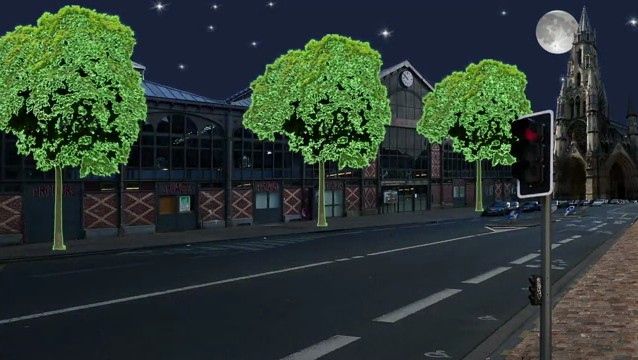
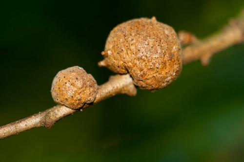
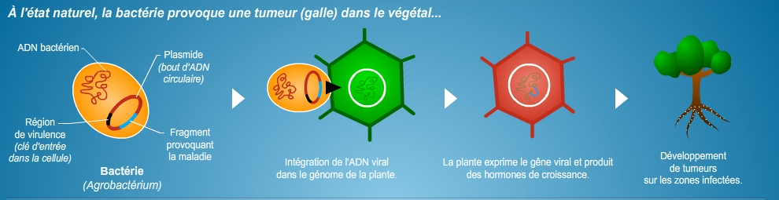
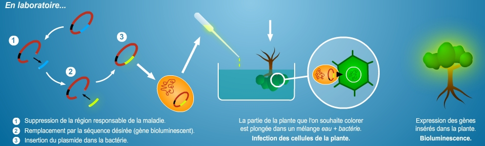
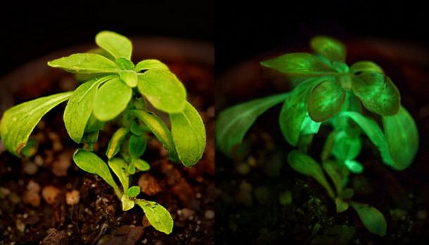
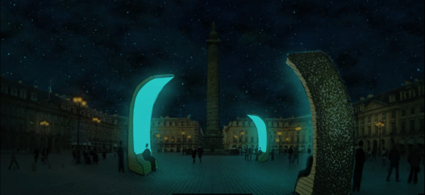
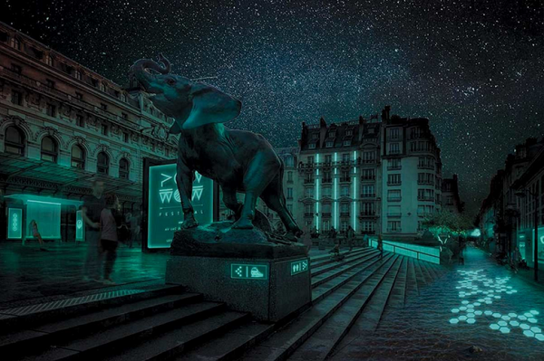
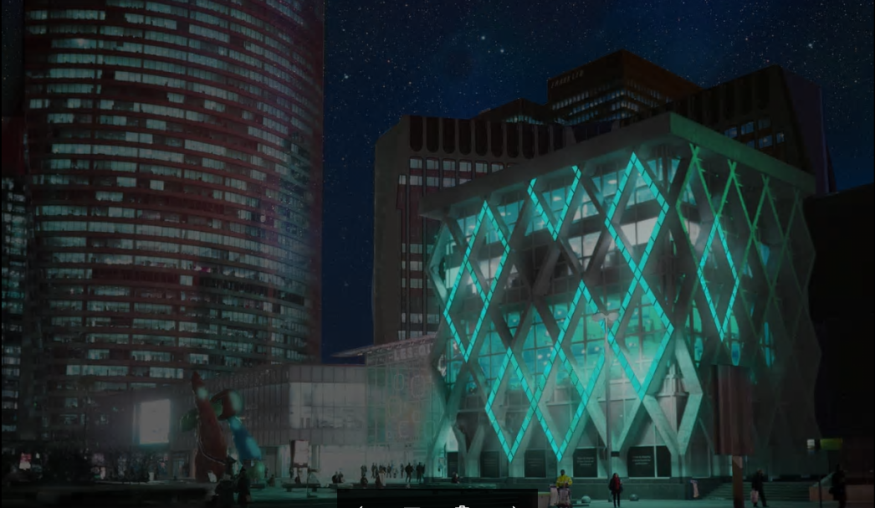
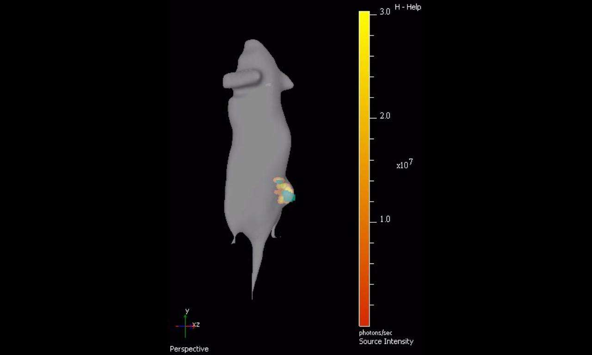
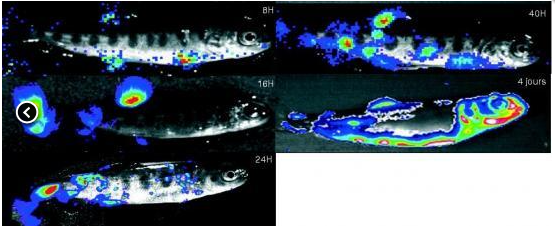

Comment la bioluminescence pourrait-elle nous être utile ?
a) Les plantes bioluminescentes :
la bioluminescence a plusieurs fonctions, utilités. Il serait intéressant de pouvoir l’exploiter à notre profit. Nous vivons une période où les ressources de la Terre s’amoindrissent. Il arrivera un jour où nous manquerons de pétrole et d’autres éléments qui nous sont fort utiles dans notre vie quotidienne. Nous devrons nous rabattre sur les énergies vertes dites renouvelables telles que les éoliennes, les panneaux solaires,… La bioluminescence pourrait alors devenir utile ici sur la terre ferme. Malgré toutes ses fonctionnalités, si la bioluminescence fait bien toujours une chose, c’est d’émettre de la lumière ! Certes, elle ne fournit que de l’énergie lumineuse et ne fonctionne pas comme les panneaux solaires ou les éoliennes mais on pourrait exploiter la bioluminescence comme source de lumière. Néanmoins, pouvons-nous nous rabattre sur cette hypothèse selon laquelle la bioluminescence pourrait à l’avenir nous servir de source lumineuse ? Plusieurs images prouvent que l’on y a déjà pensé :

Nous pouvons voir sur cette image que ce sont les arbres qui sont bioluminescents. Cela signifierait que ceux-ci, une fois plongés dans le noir, sont capables de bioluminescence. Une telle chose n’a pas encore vu le jour mais serait-il possible grâce à une bactérie de transmettre le gène de la bioluminescence à un arbre ou encore à d’autres plantes ? Pour cela, rien de plus simple en théorie. Il faut d’abord utiliser un outil classique en génétique végétale : une bactérie appelée Agrobactérium. Cette dernière a en effet une propriété précieuse pour les biologistes : elle est capable de transférer une partie de son ADN à l'intérieur de la plante. Dans la nature, l'ADN bactérien qui entre ainsi dans la cellule végétale a pour effet de provoquer chez elle des tumeurs appelées galles.
Une tumeur galle ? On appelle galle (ou cécidie) une excroissance tumorale produite sur les tiges, feuilles ou fruits de certains végétaux, suite à des piqûres d'animaux parasites. Certaines galles peuvent aussi être le fait de champignons, de nématodes ou de bactéries (Agrobacterium sur les rhizomes).

• Méthode afin de parvenir à un arbre/plante bioluminescent :
- Naturellement :
La bactérie Agrobacterium a la capacité de transférer une partie de son ADN à l'intérieur de la plante. Plus précisément, c’est son plasmide (bout d’ADN circulaire) qui va s’intégrer au génome (l'ensemble du matériel génétique d'un organisme. Il contient à la fois les séquences codantes, c'est-à-dire celles qui codent pour des protéines, et les séquences non codantes. Chez la majorité des organismes, le génome correspond à l'ADN présent dans les cellules) de la plante.
Malheureusement, le gène que la plante exprime suite au transfert est le gène viral. Ce gène va infecter l’arbre en entier, produire des hormones de croissance et alors développer des tumeurs.
=> En conclusion, nous ne pouvons transformer un arbre naturellement pour qu’il devienne bioluminescent.
-Schéma récapitulatif :

- En laboratoire
En laboratoire, il est possible de supprimer le gène viral présent dans le plasmide qui est responsable de la galle végétale. Cette séquence génétique est remplacée par une autre, celle du gène codant pour la bioluminescence. Il suffit ensuite de placer ce plasmide modifié dans la bactérie puis de la laisser tranquillement se multiplier. On obtient ainsi une solution contenant des centaines de milliers de clones de la bactérie, porteurs de ce plasmide génétiquement modifié.
Il ne reste plus alors qu'à mettre le végétal en contact avec les bactéries en l'immergeant quelques secondes dans le mélange. Ces dernières injectent alors leur plasmide génétiquement modifié dans la plante qui, quelque temps plus tard, exprimera le gène qui la rendra bioluminescente.
Schéma récapitulatif :

En théorie, l’idée est fantastique.
En effet, cette technique semble bien prometteuse mais certains problèmes voient le jour. La lumière ne sera pas d’assez forte intensité pour penser à remplacer toutes les ampoules et réverbères par des arbres et des plantes bioluminescentes.
De plus, cette manipulation comporte aussi des risques. Si l'on peut apprécier l'esthétique tout comme le côté pratique d'un tel éclairage végétal, on peut en revanche s'interroger sur le risque que représente la dissémination d'une telle plante génétiquement modifiée dans l'environnement urbain. On ne peut savoir quel sera l’effet de ce genre de plante une fois qu’elle sera dispersée dans la nature. On ne peut pas contrôler les plantes pour qu’elles ne dispersent pas leur graine, à moins encore de les rendre stériles.
Cette expérience possède également un handicap. C'est une modification génétique mineure par rapport à celles couramment pratiquées pour doter des cultures de gènes de résistance aux herbicides par exemple mais pour produire de la lumière, les plantes consomment de l'énergie. La bioluminescence constitue donc plutôt un désavantage par rapport aux plantes sauvages.
Cependant, elles présentent des avantages. Ces arbres permettraient de réaliser de grandes économies d’énergie tout en participant à réduire la pollution en ville. La pollution lumineuse serait aussi impactée puisqu’elle est causée par une trop grande quantité de lumière artificielle.
Mais dans la réalité, qu’en serait-il ?
N’est-il pas risqué de jouer aux apprentis sorciers avec la Nature?
On ne connaît pas non plus les effets à long terme de ces organismes génétiquement modifiés. Et bien souvent, ils s’avèrent être néfastes comme c’est le cas pour les OGM agricoles
Malgré tout, des chercheurs sont tout de même parvenus à obtenir une plante bioluminescente :

C’est une plante génétiquement modifiée tout droit sortie du projet « Glowing Plant » d’Antony Evans, un entrepreneur basé à San Francisco en Amérique.
b) La bioluminescence dans nos rues :
On dépense de nos jours beaucoup d’argent pour l’éclairage. La bioluminescence serait donc la parfaite alternative. En effet, plusieurs personnes ont d’ores et déjà pensé à cette option : remplacer chaque ampoule, réverbère par un organisme bioluminescent (plantes génétiquement modifiées, bactéries,…). Cependant, il est bien naturel de vouloir changer directement notre mode d’éclairage par celui-ci mais il n’est pas encore au point. Il existe, par contre, une possibilité : la signalisation. On utilise des surfaces réfléchissantes la nuit pour être en mesure de voir les différents panneaux qui nous permettent de suivre le code de la route. Et si ceux-ci, ainsi que d’autres structures, étaient plutôt lumineux grâce à la bioluminescence ? Si au lieu de se baser sur l’éclairage que l’on connait tous, pourquoi ne pas révolutionner ce mode ? Nous pourrions faire en sorte de rendre des matières bioluminescentes, ou juste des parties de constructions. Si chaque bâtiment, panneau, feu de signalisation, passage pour piétons,… comportait un élément de bioluminescence dans sa constitution, les rues seraient déjà éclairées.
Le projet Glowee a pensé à tout cela. Il étudie actuellement ces différents moyens afin de trouver une énergie réutilisable à l’infini qui ne présenterait pas un coût important et surtout qui n’accentuerait pas encore plus la pollution.
Voici quelques images se trouvant sur leur site : Site de Glowee project



Toutes ces images sont encore à l’état de projet. Même si elles semblent idylliques, il se pourrait bien que ce soit notre futur mode d’éclairage l’extérieur.
Ce projet, si mené à bien, révolutionnera le style des rues ainsi que la façon dont nous percevons le monde. Au lieu de chercher à créer de l’énergie lumineuse, pourquoi ne pas utiliser celle qui se trouve déjà sous cette forme ?
c) La bioluminescence dans le milieu médical
Dans le milieu médical, elle sert notamment de moyen de détection, de la tumeur au taux de plaque dentaire.
• Cancérologie :
L'imagerie en bioluminescence (IBL) est basée sur la détection de la lumière émise par l'enzyme luciférase (transfectée dans les cellules : ce qui signifie le transfert d’un gène) catalysant son substrat, la luciférine (injectée à l'animal). Cette méthode permet donc d'évaluer ou de suivre la croissance et la migration de cellules cancéreuses exprimant la luciférase.
Chez des souris, des chercheurs ont réussi à visualiser in situ (cela signifie en latin « sur place ») des tumeurs en 3 dimensions en utilisant des bactéries bioluminescentes ciblant les cellules cancéreuses. Une première qui pourrait aboutir à des applications aussi bien dans l'imagerie médicale que dans le domaine thérapeutique.

La souris porte donc une grosseur sur son flanc droit. Le gène lux exprimé par les bactéries est représenté sur cette image en jaune/orange. Les couleurs varient en fonction de la concentration bactérienne : plus c'est rouge et plus c'est dense.
Cette technique permettrait de s’attaquer directement aux cellules cancéreuses en épargnant les cellules saines de l’organisme. Le traitement pourra alors être certainement plus efficace.
Cependant, cette méthode n’est encore possible que sur des sujets comme les souris en laboratoire et n’est donc pas encore applicable aux êtres humains.
Odontologie :
On peut détecter la biomasse vivant sur la plaque dentaire. Les caries dentaires résultent d'une interaction des micro-organismes de la plaque sur la surface de la dent avec les glucides qui fermentent (il est intéressant d'identifier et de quantifier les composants bactériens).
• Virologie :
Le virus de la nécrose hématopoïétique infectieuse vNHI-LUC possède une cassette d’expression additionnelle codant pour la luciférase sous le contrôle des séquences de régulation du virus vNHI.
Exemple : Les poissons ont été infectés avec le virus vNHI-LUC. Les symptômes de cette maladie se traduisent par des hémorragies généralisées et des nécroses. Après 4 jours, les poissons sont transférés dans un bain contenant le substrat de la luciférase. Après anesthésie générale, ils sont soumis au système d’imagerie qui permet, grâce à une caméra très sensible, de capter la lumière émise par la réaction catalysée par la luciférase.
Un traitement d’image permettant de calibrer la quantité de lumière selon un gradient de couleur est utilisé (la lumière capturée par la caméra est due uniquement à la réaction catalysée par la luciférase apportée par le virus vNHI-LUC.)

Comme dans la cancérologie, la bioluminescence permet la détection et le suivi de la propagation d’une maladie par l’émission de photons.
=> Il existe de multiples domaines comme l’immunologie, la dermatologie,… qui commencent à utiliser la bioluminescence comme moyen de détection car elle est facilement visible à l’aide d’un appareil sensible à cette lumière.
d) En conclusion
La bioluminescence offre une multitude de possibilités pour améliorer notre quotidien. Ses fonctions sont nombreuses et surtout personnalisables. La technologie que nous possédons aujourd’hui nous permet d’étendre la bioluminescence au-delà de ce que l’on peut imaginer. En l’imaginant comme notre futur moyen d’éclairage, nous ouvrons la porte à encore d’autres possibilités pour améliorer la situation concernant le réchauffement climatique.
En tant que source lumineuse la bioluminescence possède de nnombreux avantages :


De plus, elle diminuerait de 19% la pollution lumineuse. Voici une image qui encourage le développement de la bioluminescence comme éclairage urbain en exposant les inconvénients de l’éclairage actuel :

Il en est de même dans le milieu médical : la capacité de transfecter le gène de la bioluminescence à des cellules cancéreuses ou encore grâce à de l’ATP permet une avancée dans le traitement de certaines maladies.
En conclusion, la bioluminescence possède de nombreuses applications qui pourront certainement devenir très utiles dans le futur. Des projets sont déjà en cours afin de rendre possible cet avenir où la bioluminescence serait présente dans de nombreux domaines. Donc nous pouvons dire que les bactéries capable de bioluminescentes peuvent être un atout à la surface.